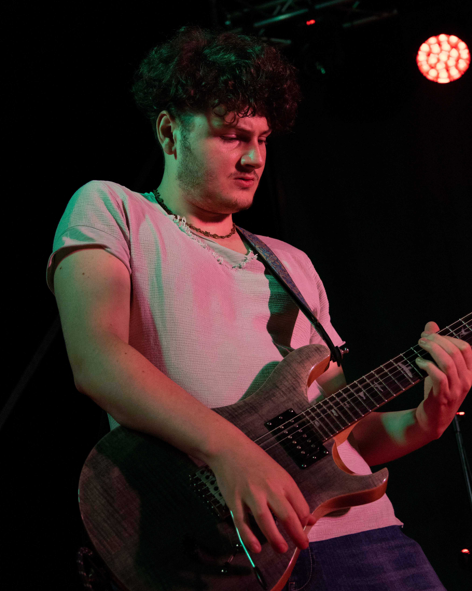

Marcello Lachina
Founder · Producer
Marcello Lachina è chitarrista e produttore musicale. Da oltre 10 anni alterna attività in studio di registrazione e live, collaborando con progetti di generi diversi e curando produzione artistica, recording e mixing.
Nel 2023 ha preso parte al Sanremo Live Box durante il Festival di Sanremo.
La sua formazione comprende Chitarra Classica presso il Conservatorio di Caltanissetta e Chitarra Pop/Rock presso il Conservatorio “A. Scontrino” di Trapani.
Contatti Social